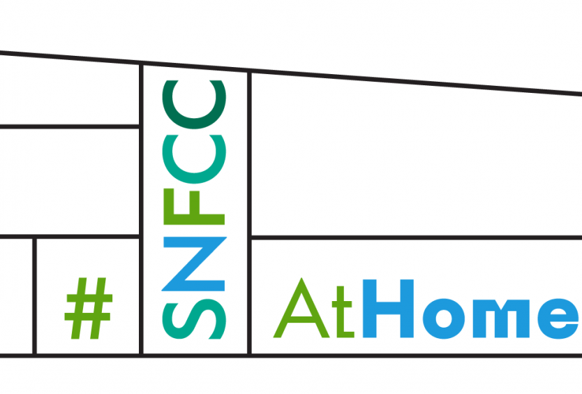

All in all, Stavros Niarchos has been really appreciated not only by students but also from adults who want to go there and relax. Many people visit the centre in order to study, because it is really quiet and the educational material it has. Some others visit the building so they can keep in shape for free. For me this building is one of my favourite in Athens and whenever I have the opportunity or I feel the need to go, I do not lose the chance and go.
